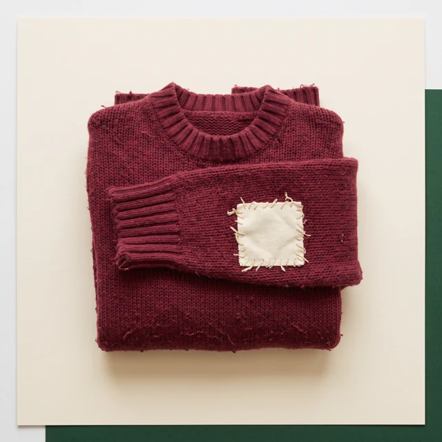
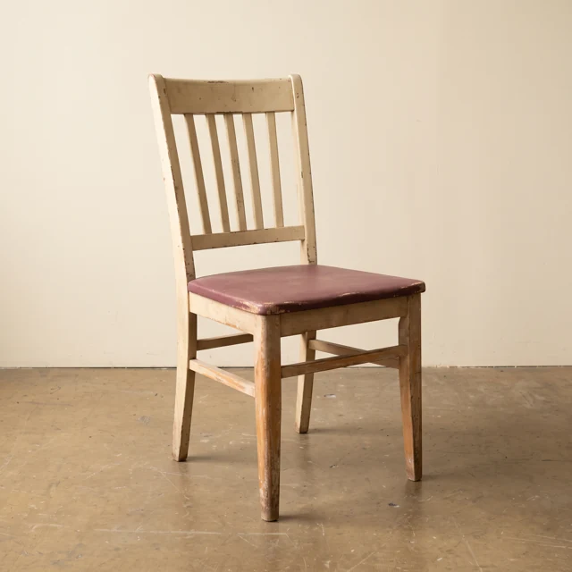
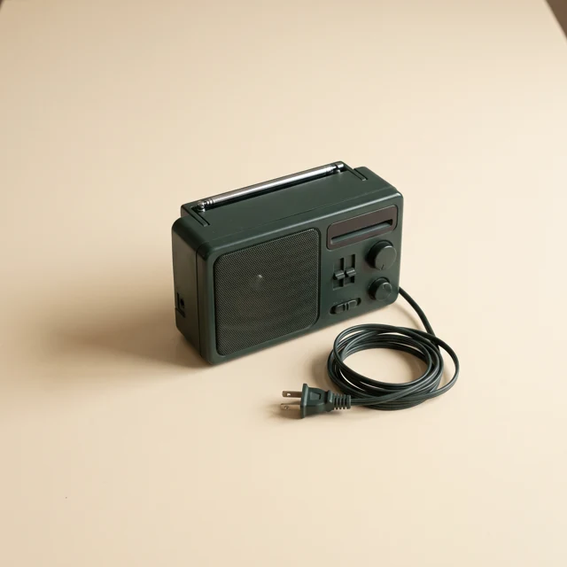

What needs a
second chance?
A worn sleeve, a wobbly chair, an appliance that stopped working. Find the right kind of help before deciding what to do next.
Find a next stepDifferent items.
Different specialists.



One item. A clear next step.
CHOOSE AN ITEMTHEN CHOOSE A GOAL
Choose a category, choose your goal, then review the example resource. No personal information is needed; choices reset on reload.
Possibility starts here.
Your matching resource example will appear here.
This concept does not assess condition or safety. Do not attempt hazardous repairs from a website demo. Electrical items, batteries, gas equipment and other safety-critical objects need appropriate qualified advice. Never pass on an item you know is unsafe.
Original cut-paper-style artwork.
Imaginary objects. A very real reason to reuse.
What to have ready.
- Describe the item, not a diagnosis.Note its material or model, what changed and any previous work. Leave fault diagnosis and safety checks to the appropriate professional.
- Check before making a trip.Ask whether that provider accepts your type of item, how assessments work and whether there are costs.
- Passing it on? Be honest.Disclose known problems and confirm the recipient’s current acceptance rules. Do not donate an item you know is unsafe.
Keep the story.
Lose the guesswork.
Not every item needs the same answer. A worn seam may need a mending specialist; a replacement part needs a compatibility check; an unwanted item needs a suitable recipient. Start with the item and your goal, then ask the right questions before making a trip.